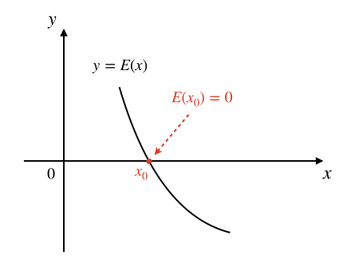
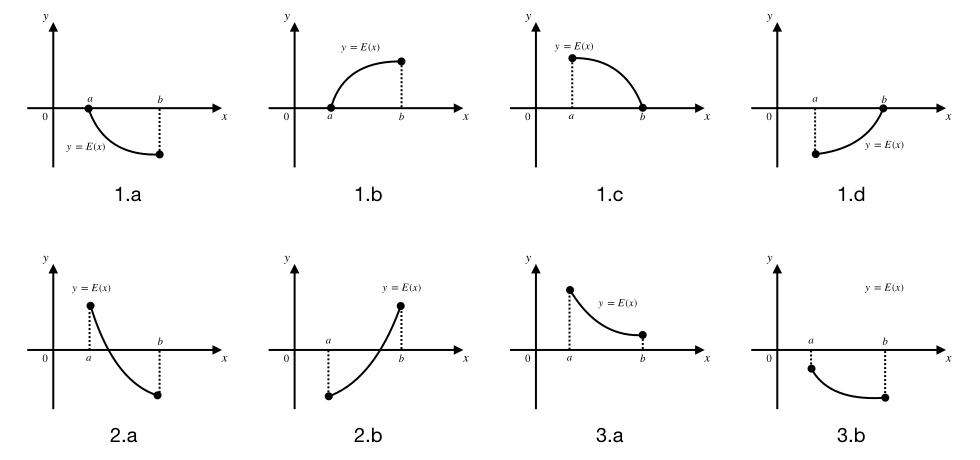
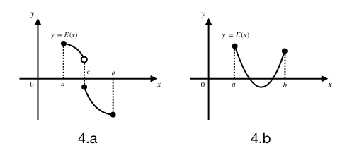
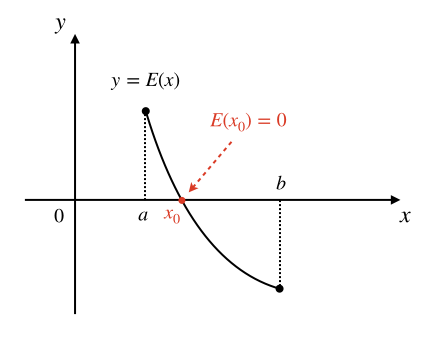
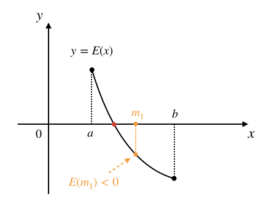
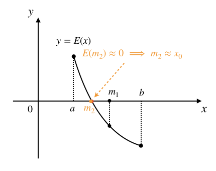

3.4.6. 二分迭代法求方程根¶
解方程，即求方程的根，是数学界永远的研究话题。有些方程很简单，比如小学就学过这样的简单方程 \(2x=4\)，根为 \(x=2\)。比较难一点的像初中数学的重中之重一元二次方程 \(ax^2+bx+c=0\)，这是人类研究得最透彻的一种方程。人类使用数学方法可以解出很多方程的根，包括一元二次方程在内的许多方程类型都有完美的数学解法。但是更多的复杂方程类型是没有一套完善的解法的，比如高于二次的一元高次方程就没有完美的普遍适用的解法，它们只有一些特殊形式可以求解，比如 \(x^3=8\)。
这一节我们学习怎么用计算机程序来求解一元方程的根。我们知道，对于任何一个一元方程，都可以通过把等号右边的所有项移动到等号左边的方式来整理成 \(E(x)=0\) 的形式，其中 \(E(x)\) 是关于变量 \(x\) 的一个数学表达式。比如 \(x^3+3x+7=2x^2+1\)，通过移项和整理就可以写成 \(x^3-2x^2+3x+6=0\)。所以我们可以用通用的形式 \(E(x)=0\) 来表示任何一元方程。
下一步我们把方程左边的表达式看成一个函数 \(y=E(x)\)，于是求解方程 \(E(x)=0\) 就可以转化为这样一个问题：找到一个变量值 \(x_0\)，使得函数值 \(y_0=E(x_0)\) 等于零。
如果理解了上一步，我们就可以再进一步把这个代数问题用几何方法来考虑。我们都知道，任何一个一元函数 \(y=E(x)\) 都可以在平面直角坐标系中画出图像来，通常是一根曲线，曲线上每一个点的坐标 \((a,b)\) 都满足 \(b=E(a)\)。若 \(x_0\) 是方程 \(E(x)=0\) 的一个根，即 \(E(x_0)=0\) 成立，那么它对应的函数值 \(y_0=E(x_0)\) 一定就满足 \(y_0=0\)。同时，它在函数图像上对应的点的坐标就是 \((x_0,0)\)。从几何意义上考虑，这个点是函数图像和横坐标轴的一个交点。如下图所示：
于是就有聪明人想到了一种方法，可以不停地用不同的 \(x\) 值去计算 \(y=E(x)\) 的值，一直试到某一次出现 \(y=0\) 的时候，就找到了对应的一个方程根。这个方法听起来不错，但是实现起来有点困难。
一方面，实数是无穷多的而且是稠密的。稠密的意思就是对于任意两个不相等的实数，无论它们的差有多小，在它俩之间总是有无穷多个实数存在，所以就没有办法像整数一样挨个儿举出一系列相邻实数来。对于这个问题，我们可以用设定根的精度来解决。比如规定根的精度为小数点后三位，这是最常用的一个精度。这样就意味着0的下一个“相邻”数是0.001，再下一个是0.002，依此类推，任意一个实数 \(a\)，它的下一个“相邻”数就是 \(a+0.001\)，这中间的数不会影响到精确度，所以我们就认为它们不存在了。这样一来我们就可以“穷举”实数了，在0到1之间，原本应该有无穷多个实数，现在实打实变成了1000个（不含1）。
上一个问题解决了，但是还有另一个方面的问题。方程是不是有根，如果有那么有多少个根，它们在数轴上都分布在什么位置？这几个问题的存在导致我们想“穷举”自变量的值却无从下手，从哪儿开始？到哪儿结束？测试出几个根来算结束？这些问题，实实在在地无法彻底解决。不过，如果我们能确定一些条件，使得上面这几个问题在一定范围内可以得到解决：
有范围：即在一个确定的取值范围 \(x\in[a,b]\) 内进行求根，闭区间 \([a,b]\) 表示大于等于 \(a\) 且小于等于 \(b\)。
无断点：即当 \(x\in[a,b]\) 范围内时，函数的图像是一条连续的曲线，中间没有间断点。
单调性：即当 \(x\in[a,b]\) 范围内时，函数要么单调递增，要么单调递减，不会出现水平线，也不会出现波浪线。
如果方程对应的函数 \(y=E(x)\) 具有上述三个特点，那么我们就有办法知道方程在 \(x\in[a,b]\) 范围内的根的数量，共有三种情况：
\(E(a)=0\) 或 \(E(b)=0\)：即有一个根恰好在某个端点处，就是 \(a\) 或 \(b\)，不会有其他根了。
\(E(a)\) 和 \(E(b)\) 异号：即一正一负，那么方程必定有且只有一个根，这个根位于 \(a\) 和 \(b\) 之间的某处。
\(E(a)\) 和 \(E(b)\) 同号：即同正同负，那么方程必定无根。
下图展示了一些满足上述条件的情形，很好理解：
图1.a到1.d是第1种情况，恰有一根在区间端点处，因为函数是单调的，所以在另外任何地方都不会再和 \(x\) 轴相交了。
图2.a和图2.b是左右端点处函数值异号的情况，由于函数连续而且单调，函数图像就像一根细线，两头分别在 \(x\) 轴的两侧，所以一定会穿过 \(x\) 轴一次，并且只有一次。
图3.a和图3.b是左右端点处函数值同号的情况，这时候函数图像这根细线的两头在 \(x\) 轴的同一侧，由于连续性和单调性，这个细线一定不可能穿越 \(x\) 轴。
这里一定要记住，函数 \(y=E(x)\) 在 \(x\in[a,b]\) 这一区间上必须同时具有连续性和单调性，缺一不可，比如下图的两种情况：
图4.a是函数不连续的情况，虽然它在左右两个端点处函数值异号，但是因为它中间不连续，所以可以直接跳过 \(x\) 轴，造成无根。
图4.b是函数不单调的情况，不单调的函数可能存在多个根。
总之，一旦函数在区间 \([a,b]\) 上缺失连续性或者单调性，那么这个范围里有没有根，有多少个根这个问题就无法预判了。如果遇到这种情况，只能逐个 \(x\) 值地蛮力测试，无法使用二分迭代法。
提示
连续而且单调，这样的条件听起来很苛刻，其实所有初等函数都是连续的。初等函数就包括了常见的所有线性函数、幂函数、多项式函数、指数函数、对数函数、三角函数、反三角函数、双曲函数、反双曲函数……并且，所有初等函数通过有限次的加减乘除或者复合组合出来的函数还是初等函数！可以说，在中学阶段能遇到的函数，除了某些刻意安排的分段函数以外，几乎都是连续的。而且这些初等函数的单调性和单调区间在数学上都是可以分析求解的。
所以函数在某个区间上连续而且单调，这种情况其实是大量存在的，这个条件并不苛刻。
因此，如果要在区间 \([a,b]\) 上求解方程 \(E(x)=0\)，而且已经知道了函数 \(y=E(x)\) 在这个区间上连续且单调，就可以很方便地根据端点值 \(E(a)\) 和 \(E(b)\) 确定根的3种情况。情况1和情况3可以直接得到结果，情况2可以通过二分迭代法来进行快速求根。下面我们看一下二分迭代法求根的原理和算法。
假如函数 \(y=E(x)\) 是下图所示的这样一个在区间 \([a,b]\) 上连续且单调递减的函数，设它的图像和 \(x\) 轴的交点位于点 \((x_0,0)\) 处，那么我们要求的根就是这个 \(x_0\)。
我们可以用这样的方法来循环地逐步逼近这个根：先求区间中点 \(m_1=(a+b)/2\)，计算函数值 \(E(m_1)\)：
计算后发现 \(E(m_1)\lt0\)，由于这是一个递减函数，端点值总是左正右负，所以我们把区间的右端点改成 \(m_1\)。区间于是减半为 \([a,m_1]\)，而且可以保证根 \(x_0\) 还是在新的区间内，然后用同样的方法进行下一轮迭代。
第2轮迭代基于新的区间 \([a,m_1]\)，先求区间中点 \(m_2=(a+m_1)/2\)，求出 \(E(m_2)\)：
计算后发现 \(E(m_2)\) 已经非常接近0了，已经满足了根的精度要求，就可以认为已经求得了方程 \(E(x)=0\) 的根 \(x_0\approx m_2\)。
总结上面的过程，我们就可以得出二分迭代法求方程根的算法框架。但是在实际设计算法并编写C++程序的时候，还有两个地方需要特殊处理：
前面说过，由于实数的稠密性，大多数情况下很少能真正出现某次中间值 \(E(m_k)=0\) 的情况，同时由于计算机使用的浮点数天生存在误差，即使某个中间值应该确实等于0，计算机计算出来的值很可能是0.0001或者-0.000019之类的有误差的数值。因此我们在判断一个值是不是等于0的时候，不能用
if (y == 0.0)这样去判断，而是应该判断它的绝对值是不是小于某个很小的数，这个数我们称为零点误差，一般取 \(10^{-4}\) 到 \(10^{-9}\) 之间的某个很小的小数。具体取到多小，视题目的要求而定，在求方程根的问题中，一般 \(10^{-6}\) 就足够了。方程求根问题一般会规定一个根的精度要求，通常都是要求保留小数点后2位或3位，即解得的答案和真正的根之间可以接受的最大误差为 \(10^{-2}\) 或者 \(10^{-3}\)，我们称之为精度误差。它不同于零点误差，往往中间值还没有达到小于零点误差时，迭代过程已经让区间长度缩小到精度误差以内了，这时候再迭代下去已经没有意义了。所以我们还要对求根区间的长度进行控制，一旦发现其已经满足题目规定的答案精度要求，就结束迭代，并把当时的区间中点就认为是方程的根。简单地说，迭代过程每迭代一次都会让区间长度减半，如果减到足够小了，我们就认为根已经找到了，就是当时的区间中点。
综上所述，二分迭代法求方程 \(E(x)=0\) 根的算法框架如下：
二分迭代法求根算法
\(\text{Solve}(a,b,ACC)\): // a,b为求根区间左右端点，ACC为根的精度误差
\(\text{IF }E(a)\approx0\text{ THEN RETURN }a\) // 约等于0表示绝对值小于零点误差
\(\text{IF }E(b)\approx0\text{ THEN RETURN }b\)
\(\text{IF }E(a)\lt0\text{ THEN }inc\leftarrow true\) // inc表示是否递增
\(\text{WHILE }b-a\gt ACC\text{ DO}\)
\(m\leftarrow(a+b)/2\)
\(\text{IF }E(m)\approx0\text{ THEN RETURN }m\)
\(\text{IF }m\lt0\text{ THEN}\)
\(\text{IF }inc=true\text{ THEN }a\leftarrow m\text{ ELSE }b\leftarrow m\)
\(\text{ELSE}\)
\(\text{IF }inc=true\text{ THEN }b\leftarrow m\text{ ELSE }a\leftarrow m\)
\(\text{RETURN }(a+b)/2\)
在实际编程中，方程求根问题往往会在题目中给出一些可以利用的已知条件。有时候会事先知道函数的增减性，这样就不需要在程序中判断了；有时候题目会直接告诉你根不在区间端点处，这样算法又可以省略一些步骤。这种情况会很多，读题的时候要学会判断题目中给出的条件，也要会自行对方程对应的函数进行一些数学上的分析，得到一些隐藏的条件。总之，算法会根据不同的问题而有所不同，不能生搬硬套算法框架。
接下来我们先看一个比较简单的实例，求-1000000到1000000之间任意实数的立方根。下一节我们再单独学习一个来自洛谷网站的更复杂一些的实际问题。
3.4.6.1. 求正负一百万之间任意实数的立方根¶
现在我们来看一个实际问题，求立方根 \(\sqrt[3]{a}\)，其中 \(a\) 是实数，且 \(-10^6\le a\le10^6\)。在C++语言的数学库 cmath 中并没有求立方根的库函数可以调用，我们只能自己编程来计算。这个问题可以用二分迭代求方程的方法来求解。
设 \(\sqrt[3]{a}=x\)，我们的任务是求解这个方程的根。根据立方根的特点，我们知道如果 \(a\in[-10^6,10^6]\)，那么 \(x\in[-100,100]\)。但是如果我们把方程整理成 \(x-\sqrt[3]{a}=0\)，并设函数 \(y=x-\sqrt[3]{a}\)，我们仍然无法用C++程序来计算这个函数的值，因为我们无法直接求出 \(\sqrt[3]{a}\)，把方程简单地移项整理成这种形式没有任何帮助。
对于这个问题，我们需要多做一些变形，方法是先对 \(\sqrt[3]{a}=x\) 两边同时三次方，变成 \(a=x^3\)，然后就可以整理成 \(x^3-a=0\)，并设函数 \(y=x^3-a\)。这个函数可以非常简单地用C++语言进行求值了。在程序里，对于这种简单的求值计算一般可以写成一个内联函数，加快调用速度：
inline double eval(double x, double a) { return x * x * x - a; }
注解
如果一个函数满足以下特点，那么往往可以在它前面加上 inline 指令让它变成内联函数，加快调用速度，同时改善代码的可读性：
非常简单，一般不超过3句语句；
在程序中会被多次反复调用；
不会被递归调用。
现在就可以用二分迭代法来求解方程 \(x^3-a=0\) 的根了，这个根就是要求的立方根 \(\sqrt[3]{a}\)。在开始编程之前，我们还需要再挖掘一下数学上的特性，看看有没有什么便利条件可以利用。
首先，我们要确定求值区间，对于任意的 \(a\in[-10^6,10^6]\)，很显然有 \(x\in[-100,100]\)，这就是求值区间。在区间的两头，有 \(\sqrt[3]{\pm10^6}=\pm100\)，这是两个根在区间端点的情况，我们可以在程序中进行特判把这两个特殊值预先处理掉。
经过预先的特判，我们把 \(a\) 限制在了 \(-10^6\lt a \lt 10^6\) 的范围内。对于任何一个这样的 \(a\)，我们可以确定，求值区间左端点处的值为 \(-10^6-a\lt0\)，而右端点处的值 \(10^6-a\gt0\)。
再看函数 \(y=x^3-a\)，很显然，对于任意两个不同的实数 \(x_1\lt x_2\)，有 \(x_1^3\lt x_2^3\)，从而就有 \(x_1^3-a\lt x_2^3-a\)，这就证明了这个函数是在整个实数域上单调递增的。所以对于任意的实数 \(-10^6\lt a \lt 10^6\)，一定有且仅有一个根位于区间 \((-100,100)\) 内。
万事俱备了，下面就可以开始编程了。为了方便起见，我们定义两个常数，分别表示零点误差和精度误差。零点误差取 \(10^{-6}\)，精度误差按照题目要求取 \(10^{-3}\)。另外，判断一个数是不是已经小到可以视为零了这个步骤，也很适合编写成一个内联函数。下面是完整的程序：
#include <cstdio>
const double EPS = 1e-6; // 用于判断一个double数是否为0的零点误差常数
const double ACC = 1e-3; // 求三次方根的解的精度误差常数
// 求解 a 的三次方根
double cubic_root(double a);
// 计算多项式函数 f(x) = x^3 - a 的内联函数
inline double eval(double x, double a) { return x * x * x - a; }
// 判断一个数 x 是否可以视为 0 的内联函数
inline bool is_zero(double x) { return x <= EPS && x >= -EPS; }
int main()
{
double a;
scanf("%lf", &a);
printf("cubic root of %lf = %8.3lf\n", a, cubic_root(a));
return 0;
}
double cubic_root(double a)
{
if (a == -1000000.0) return -100.0; // 左端点特判
if (a == 1000000.0) return 100.0; // 右端点特判
// 经过上面两个端点特判后，可以断定左端点处值为负，右端点处值为正，单调递增，符合二分迭代条件
// left, right, mid：左端点，右端点和中间点
// mid_value：中间端点处的多项式函数值
double left = -100.0, right = 100.0, mid, mid_value;
// 左右端点的间距大于根的精度要求时，继续循环迭代
while (right - left > ACC) {
mid = (left + right) / 2; // 求中间点
mid_value = eval(mid, a); // 求中间点处的值
// 下面被注释掉的两行是用来调试的输出语句，输出二分迭代的过程步骤
//printf("left = %9.4lf, right = %9.4lf, mid = %9.4lf, mid-value = %14.6lf\n",
// left, right, mid, mid_value);
if (is_zero(mid_value)) return mid; // 求解完成
if (mid_value < 0)
left = mid; // 递增，且中间点处值小于0，说明根在右半边，迭代右移
else
right = mid; // 递增，且中间点处值大于0，说明根在左半边，迭代左移
}
// 若迭代直到左右端点间距达到根的精度要求时才结束，就以二者的平均值作为根
return (left + right) / 2.0;
}
提示
程序中有两行被注释掉的调试语句，大家可以把注释去掉，在运行的时候看一看整个迭代过程，相信会有所收获。
这个程序运行的速度非常之快，大家如果按照上面的提示去做一下就会发现，最多大概十几步就可以找到解，下面我们做一详细的分析。
按照保留小数点后面3位的精度要求，数轴上每一个单位内有1000个值要测试，整个求值区间 \([-100,100]\) 共有20万个候选解。假如使用蛮力法穷举，最坏的可能要测试完所有这些候选解，平均情况下是测试十万次。使用二分迭代法，每迭代一次求值区间折半，即第1轮迭代后候选解除2，减少为10万个，第2轮迭代后再除2，减少为5万个，依此类推，最坏的情况是也就是迭代直到求值区间长度小于精度误差0.001，这意味着此时候选解的个数为0个或1个。那么20万除多少次2会减小到小于等于1呢？这个问题在数学上等价于问2的多少次方当好大于或等于20万？这就是以2为底的20万的对数值，向上取整，记作 \(\lceil\log_2{200000}\rceil=18\)，也就是说迭代最多18次，就可以得到所要求的解。
因此，以 double 乘法为基本运算单位，以求解区间内的候选解数量n为问题规模，那么蛮力探测法的时间复杂度是和问题规模成正比的，是线性时间 \(O(n)\) 的。二分迭代法的时间复杂度则是更快的 \(O(\log n)\)。
初学者，尤其是还没有在数学课堂上学过对数函数分析的时候，对于二者的差距可能有点摸不着头脑。那么通过这个实例的分析，我们就可以很直观的认识到 \(O(\log n)\) 相比 \(O(n)\) 在数量级上的巨大优势，18 vs 200000！